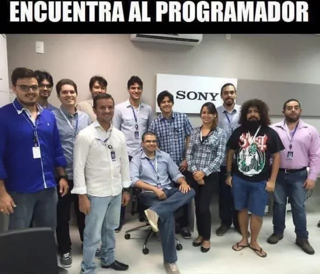

Exclusiva
El fin de los `floats` en el diseño web moderno
Durante años, los desarrolladores lucharon contra los elementos flotantes y el temido "clearfix". Hoy, gracias a las bondades de CSS Flexbox y Grid, crear layouts complejos es cuestión de unas pocas líneas de código. Descubre cómo esta tecnología ha revolucionado la maquetación.
Leer más →